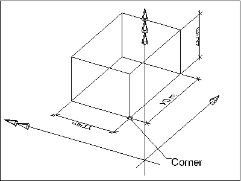

EXPRESS-G diagram
EXPRESS-G diagram| Boite englobante | |
| Umfassungskörper |
The IfcBoundingBox defines an orthogonal box oriented parallel to the axes of the object coordinate system in which it is defined. It is defined by a Corner being a three-dimensional Cartesian point and three length measures defining the X, Y and Z parameters of the box in the direction of the positive axes.
NOTE Any subtype of IfcProduct having a product shape representation may have a bounding box representation. The 'Box' representation identifier defined at IfcShapeRepresentation utilizes the IfcBoundingBox as the simpliest 3D shape representation.
 |
As shown in Figure 284, the IfcBoundingBox is defined with its own location which can be used to place the IfcBoundingBox relative to the geometric coordinate system. The IfcBoundingBox is defined by the lower left corner (Corner) and the upper right corner (XDim, YDim, ZDim measured within the parent co-ordinate system). |
|
Figure 284 — Bounding box |
NOTE Corresponding STEP type box_domain defined in ISO 10303-42.
HISTORY New entity in IFC1.0.
XSD Specification:
<xs:element name="IfcBoundingBox" type="ifc:IfcBoundingBox" substitutionGroup="ifc:IfcGeometricRepresentationItem" nillable="true"/>EXPRESS Specification:
| ENTITY IfcBoundingBox |
| SUBTYPE OF IfcGeometricRepresentationItem; |
|
| DERIVE |
|
| END_ENTITY; |
Attribute Definitions:
| Corner | : | Location of the bottom left corner (having the minimum values). |
| XDim | : | Length attribute (measured along the edge parallel to the X Axis) |
| YDim | : | Width attribute (measured along the edge parallel to the Y Axis) |
| ZDim | : | Height attribute (measured along the edge parallel to the Z Axis). |
| Dim | : | The space dimensionality of this class, it is always 3. |
Inheritance Graph:
| ENTITY IfcBoundingBox |
| ENTITY IfcRepresentationItem |
| INVERSE |
|
| ENTITY IfcGeometricRepresentationItem |
| ENTITY IfcBoundingBox |
|
| DERIVE |
|
| END_ENTITY; |
 Link to this page
Link to this page